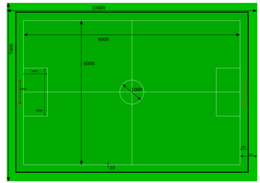
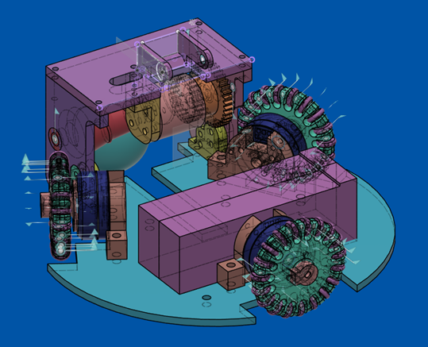
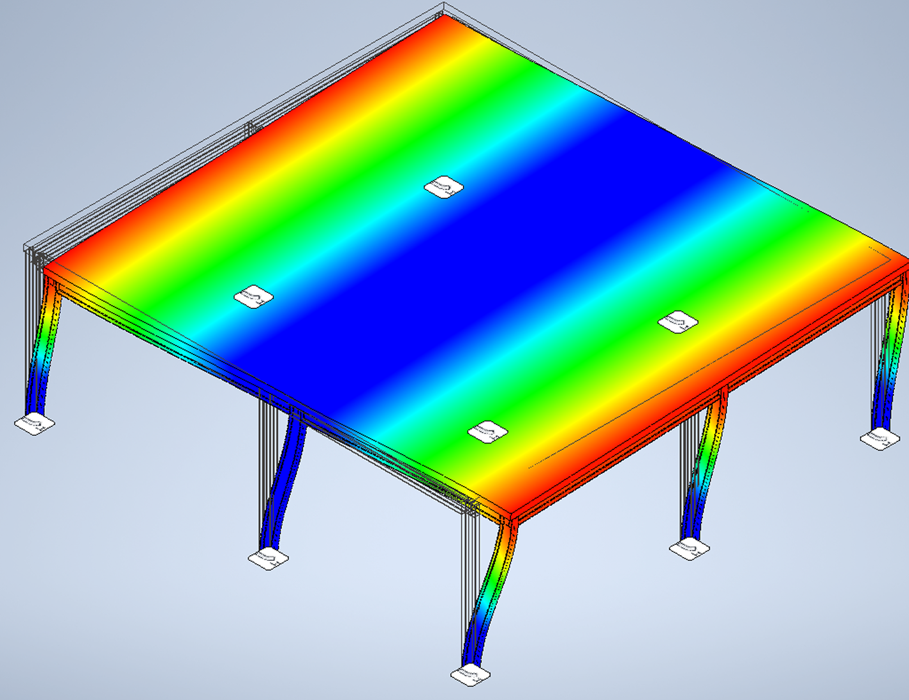
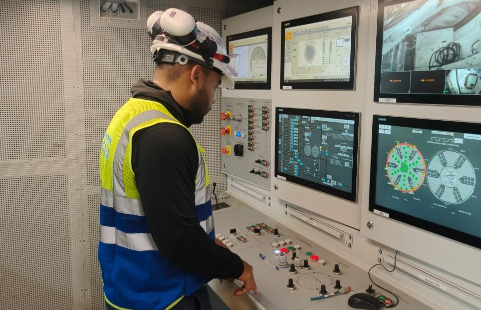
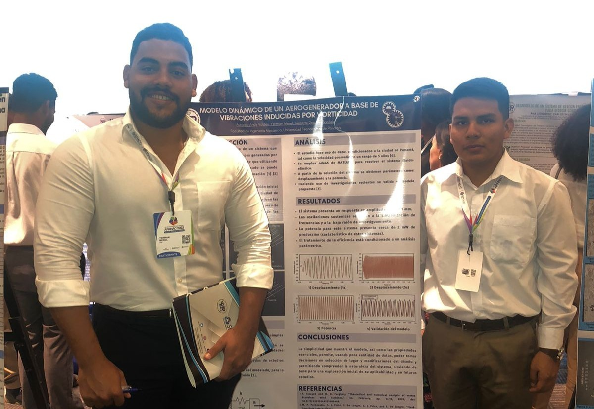
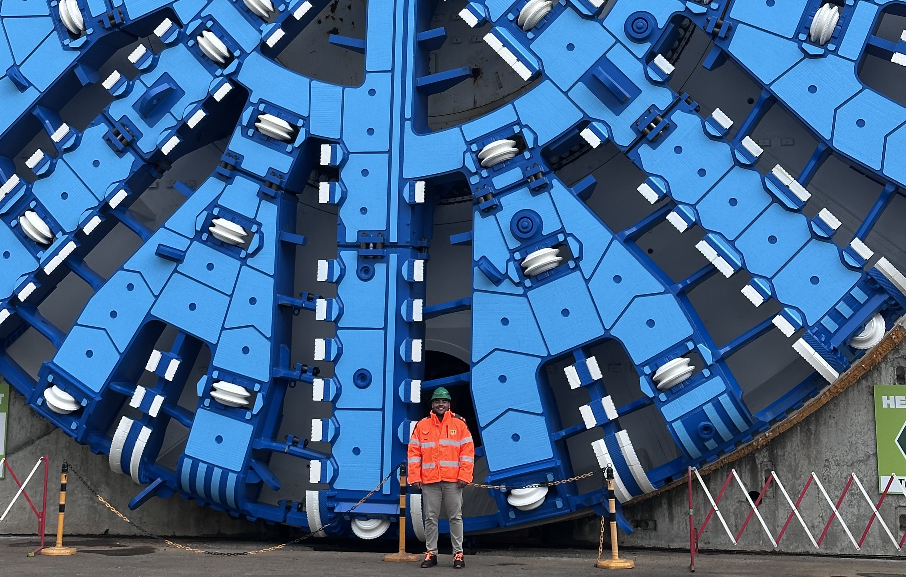
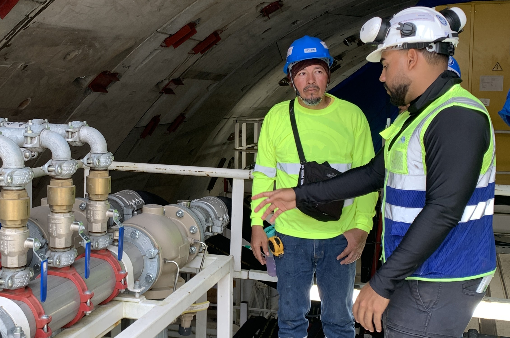

I stand for science, reducing uncertainty through fundamental laws.
Through study and innovation, I aim to build knowledge that lasts, solutions that empower, and ideas that inspire. That is why I am an engineer.

Through study and innovation, I aim to build knowledge that lasts, solutions that empower, and ideas that inspire. That is why I am an engineer.

Within the framework of the development of technologies applied to robotics and artificial intelligence, the challenge arises to design and build a robot capable of competing in the Small Size League Division B, a category that is part of the robotic soccer competitions organized by RoboCup. The main objective of this project is to combine mechanical design, programming, and electronics skills to create an efficient, fast, and strategically intelligent robot capable of interacting with a team and performing in a competitive environment.
The SSL Robocup features the competition format of 11v11 football matches with an orange golf ball referred
to as the A division, while the 6v6 matches refer to its B division. Teams build robots based on a set of defined
constraints and rules.
Division B was chosen according to its own criteria of design and the resources available at that time.
The principal constraints of Division B were defined by the Rules of the RoboCup Small Size League document.

The purpose of this project is to apply engineering knowledge across programming, mechanical, and electronic fields to the development of an autonomous robot capable of executing movements and actions characteristic of football.


Este plano detalla la disposición y dimensiones de la estructura, incluyendo las ubicaciones de las columnas y vigas. Se han considerado los códigos de construcción locales para garantizar la estabilidad y seguridad de la obra.

Este modelo 3D muestra un análisis de tensiones y deformaciones utilizando colores para indicar las áreas de mayor y menor esfuerzo. Los resultados sugieren ajustes en el diseño para optimizar la resistencia estructural.
Here goes the conclution
Hola soy una introducciòn
Este plano detalla la disposición y dimensiones de la estructura, incluyendo las ubicaciones de las columnas y vigas. Se han considerado los códigos de construcción locales para garantizar la estabilidad y seguridad de la obra.
Este modelo 3D muestra un análisis de tensiones y deformaciones utilizando colores para indicar las áreas de mayor y menor esfuerzo. Los resultados sugieren ajustes en el diseño para optimizar la resistencia estructural.
Este plano detalla la disposición y dimensiones de la estructura, incluyendo las ubicaciones de las columnas y vigas. Se han considerado los códigos de construcción locales para garantizar la estabilidad y seguridad de la obra.
Este modelo 3D muestra un análisis de tensiones y deformaciones utilizando colores para indicar las áreas de mayor y menor esfuerzo. Los resultados sugieren ajustes en el diseño para optimizar la resistencia estructural.
Here goes the conclution
Hola soy una introducciòn
Este plano detalla la disposición y dimensiones de la estructura, incluyendo las ubicaciones de las columnas y vigas. Se han considerado los códigos de construcción locales para garantizar la estabilidad y seguridad de la obra.
Este modelo 3D muestra un análisis de tensiones y deformaciones utilizando colores para indicar las áreas de mayor y menor esfuerzo. Los resultados sugieren ajustes en el diseño para optimizar la resistencia estructural.
Este plano detalla la disposición y dimensiones de la estructura, incluyendo las ubicaciones de las columnas y vigas. Se han considerado los códigos de construcción locales para garantizar la estabilidad y seguridad de la obra.
Este modelo 3D muestra un análisis de tensiones y deformaciones utilizando colores para indicar las áreas de mayor y menor esfuerzo. Los resultados sugieren ajustes en el diseño para optimizar la resistencia estructural.
Here goes the conclution
Herrenknecht AG
Developed engineering documentation, technical reports, and design validations for tunneling machine projects under international standards.
China Railway Tunnel Group (CRTG)
Supported industrial piping layout design, coordination with engineering teams, and technical documentation for tunneling construction projects.
With a minor in Dynamic Systems and Automation.
Jan 2018 - Dec 2024
Design the piping system to comply with global codes standards, Stress analysis using industry-accepted stress analysis software, Modify the pipe routing along with supports, Material specification sheet, Optimization of pipe routing.
Expected - Dec 2026

Understanding the operational parameters of a Mixshield Tunnel Boring Machine.

Participating and presenting research in an academic environment.

Engineering experience and learning from one of the biggest TBM manufacturers.

Hands-on experience in tunneling operations, mechanical systems and inspection.